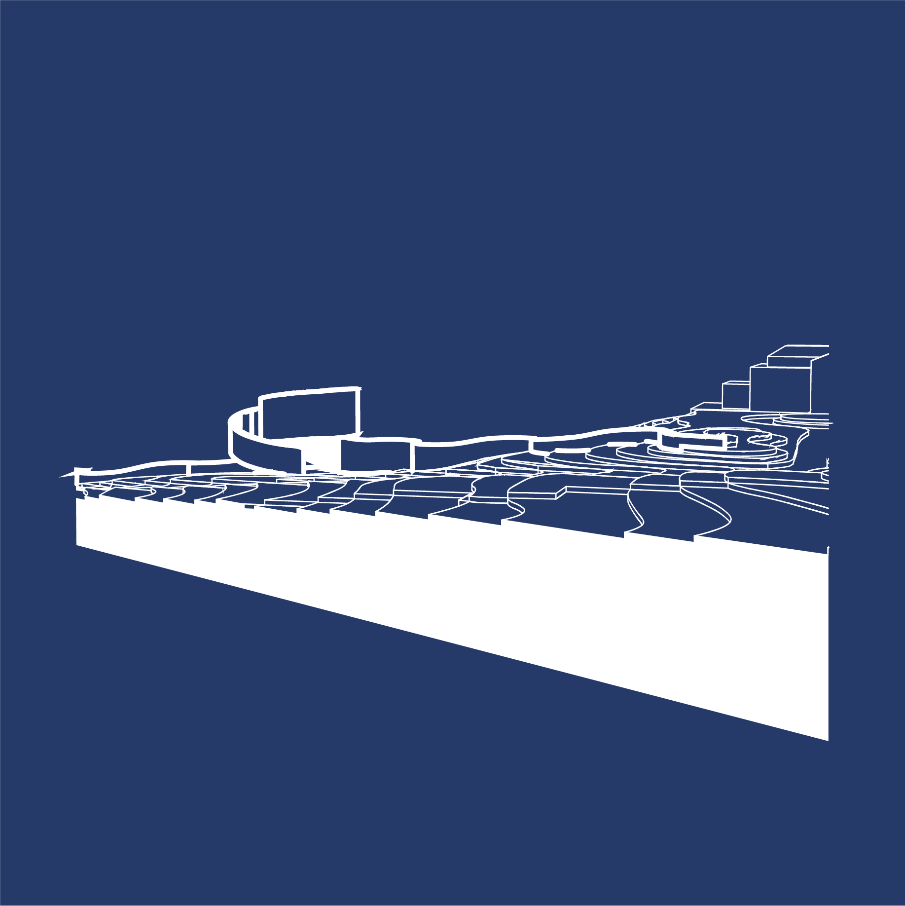

I am currently pursuing a Master’s degree in Architecture at UHasselt (Belgium), where I continuously keep expanding my expertise beyond academic studies.
This international internship, offered a unique opportunity to both apply my architectural knowledge and gain fresh perspectives through cross-cultural experiences.
During the summer of 2024, I gained hands-on experience exploring how design can shape embassy spaces, influence security, and enhance functionality at the Belgian Embassy to the United States in Washington DC , where I merged my architecture knowledge with international diplomacy.
01
INTRO
During my internship at the Belgian Embassy in Washington, DC, I discovered how
architecture
can embody diplomacy.
The embassy, with its blend of Belgian and American elements, reflects both security and
cultural
identity,
which inspired me deeply. When I was invited to work on a preliminary design for a new embassy
office,
I saw it as a chance to fuse my architectural knowledge with my understanding of these two
cultures.
I aimed to create a space that not only served its purpose but also symbolized the dynamic
relationship between Belgium and the United States.
I specifically chose the Belgian Embassy because of
its strategic location at the center of global diplomacy.
It was exciting to be in a place where high-level political discussions and international
interactions happen regularly.
As an architecture student, I was curious about how the design of such a critical building can
support
both its diplomatic role and the practical demands of security.
The Belgian Embassy provided an excellent case study for this, showing how architecture can
adapt to complex
environments while still making a powerful statement.
One of the most interesting aspects for me was seeing how the embassy’s design
navigates the cultural differences between
Europe and the U.S.
This mix of influences is something I really wanted to explore, as it shapes how the embassy
conveys Belgium’s identity to the world.
The embassy isn’t just about diplomacy; it’s a hub for promoting Belgium’s interests,
whether through economic partnerships or cultural exchanges. It has to be a bridge between two
very different places,
projecting openness and hospitality while maintaining tight security.
My experience at the embassy, and especially the opportunity to work on this project, gave me a
deeper understanding of
how architecture can support and enhance diplomatic efforts.
It’s more than just creating a functional space; it’s about telling a story and facilitating
connections.
Through this architectural project, I got to contribute to that narrative, merging Belgian and
American elements in a way that celebrates both cultures.
It was a unique chance to apply what I’ve learned and create something that reflects the
embassy’s mission and vision for the future.
02
TRAVEL
JOURNAL
03
RESULT
New Office Building
An embassy serves as a key representation of a country beyond its borders and should embody three essential qualities: it must convey strength, function effectively as an office, and provide security. What if the building itself could serve as both a barrier and a functional workspace, eliminating the need for a separate security gate?
Residence Preparation
This summer was a significant time due to the transition of ambassadors. After four years, the residence needed to be readied for the new ambassador. I was involved in coordinating and overseeing the timeline of various tasks, including cleaning and making adjustments to meet the new ambassador’s requirements, before his arrival.
Sketchbook Journey
During my design process, I kept a sketchbook where I documented my thoughts and ideas. It became a valuable space for brainstorming and reflection, capturing everything from initial concepts to challenges I faced along the way. This not only helped me clarify my vision but also served as a record of my evolving thought process and making decisions.
04
REVIEW
What was your role in the organization?
During my internship at the Belgian Embassy, I had two main roles that kept me busy in
different ways.
First, I was tasked with coming up with an initial design for a new office building that
they’re planning to construct.
The idea was to use some of the open space near the ambassador’s residence to build a
chancery so that both the offices and
the residence would be closer together, making it easier for the staff to work more
efficiently.
This project allowed me to really focus on my architectural skills, and I worked mostly on
my own,
creating designs that matched what the embassy wanted.
The second major task I handled was getting the ambassador’s residence ready for the
new ambassador.
This involved overseeing and coordinating various preparations, like cleaning, fixing up the
place,
and making sure everything was set up according to the new ambassador’s preferences.
For this part of the internship, I worked closely with other colleagues and external
contractors,
and my role was crucial in making sure everything ran smoothly and on schedule.
These two responsibilities—one focused on design, where I worked independently,
and the other more hands-on and collaborative—created a nice balance and
gave me a really varied experience during my time at the embassy.
What did you learn? What did you not learn?
Building on my responsibilities at the embassy, I also gained valuable skills in professional
negotiation.
I quickly realized that diplomacy isn’t limited to high-level talks between diplomats;
it extends to everyday interactions, like negotiating prices and services with external
companies.
This was my first real experience managing such discussions, and it felt a bit daunting at
first,
knowing that the decisions I made could directly impact the success of my tasks.
However, it gave me a deep understanding of how to navigate professional deals,
from writing clear emails to making effective phone calls and reaching agreements.
Another unexpected learning experience came from the social aspect of the diplomatic world.
I had the opportunity to attend several formal events, which gave me a firsthand look at
high-level networking.
These occasions taught me how to present myself professionally, from following the dress
code to addressing people appropriately.
It opened my eyes to the importance of building relationships outside the office and how
much informal settings contribute to diplomatic work.
Was this experience in line with both your expectations/goals of an international internship?
When I first found out that my internship would be at the Belgian Embassy, I was both excited
and slightly intimidated. The idea of working in a place tied to global decision-making and
diplomacy was a bit overwhelming. Especially because architecture isn't typically what comes
to mind when thinking about embassies or diplomatic work. However, my perspective changed
significantly once I began working there. As an intern for the project manager, I was
directly involved in tasks that gave me a deeper understanding of the role architecture
plays in diplomacy.
An embassy is not just about fostering relationships between nations; it's also about
representing its power and identity and sharing its culture. The architecture of the embassy becomes a tool for
conveying the character and influence of the home country to the host nation. Also, I witnessed how the embassy staff comes and goes with
each new ambassador or diplomat, but the building itself stands as a constant, often
outlasting generations of employees.
Additionally, the international aspect of my internship was spot on and went beyond just
American culture. Due to Washington, D.C.'s unique position as a hub for global relations, I
had the chance to interact with people from many different cultures. It wasn’t only an
opportunity to showcase my knowledge and what I had learned in Belgium to the outside world,
but also to learn from others. Being exposed to such a wealth of information, I discovered
how people from different backgrounds perceive their own cultures and approach architecture.
This broadened my understanding in ways I hadn’t anticipated, further highlighting how
architecture is intertwined with diplomacy and culture, far beyond what I initially
expected.
What will you remember from this internship later on in life as a student or architect?
I will always remember how this internship offered a well-rounded experience, combining
independent tasks with collaborative and hands-on work. It allowed me to develop my skills
in a meaningful way, while also teaching me how to work efficiently with others and manage
projects effectively. The experience of engaging in professional negotiations and attending
formal events exposed me to the world of diplomacy and high-level networking. These
experiences, blending technical expertise with a deeper understanding of professional
relationships, will stay with me for a long time.
This internship has significantly influenced how I approach architecture. I now understand
that architectural design can play a crucial role in diplomatic and professional
environments. Additionally, the lessons I learned about professional negotiation, teamwork,
and the importance of relationships in informal settings have provided valuable skills that
I can apply in the future. Moving forward, I will be more mindful of the broader
implications my work can have, not just from a technical perspective, but also in terms of
functionality, cultural sensitivity, and effective communication.
Does the host company achieve its mission and ambition?
While architecture may not be the first thing people associate with embassies, it plays a
significant role in supporting their mission of representing a country’s identity and values
abroad. Embassies achieve their mission not only through diplomacy but also through the
physical presence and design of their buildings. The architecture reflects national identity
and cultural values, making the design an important tool in conveying a country's image to
the rest of the world. In this sense, embassies fulfill their mission by using architecture
as a means to create a lasting impression on foreign officials and visitors.
While embassies really try to represent their country through architecture, they sometimes
hit roadblocks due to budget limits or bureaucratic red tape. Even though the main focus is
on diplomatic work, the building itself plays a big role in shaping how the embassy is seen,
and they usually do a good job of making that happen.
Is this a good host company for interns?
Embassies provide a unique opportunity to understand how architecture functions as a
representation of national identity on an international stage. Interns can learn how the
design of buildings can influence perceptions, convey cultural messages, and represent a
country's power and values.
The advantages include gaining exposure to the intersection of architecture and diplomacy,
which is rarely seen in typical architectural settings. An intern can be involved in
anything from renovation projects to creating designs that uphold both functional and
symbolic purposes. However, the role of architecture may sometimes be secondary to the
embassy’s primary diplomatic functions, so the variety of architectural tasks may depend on
the embassy's specific projects at the time. Despite this, the learning opportunities about
how architecture can impact international relations are invaluable, making it a good host
company for an architecture student.